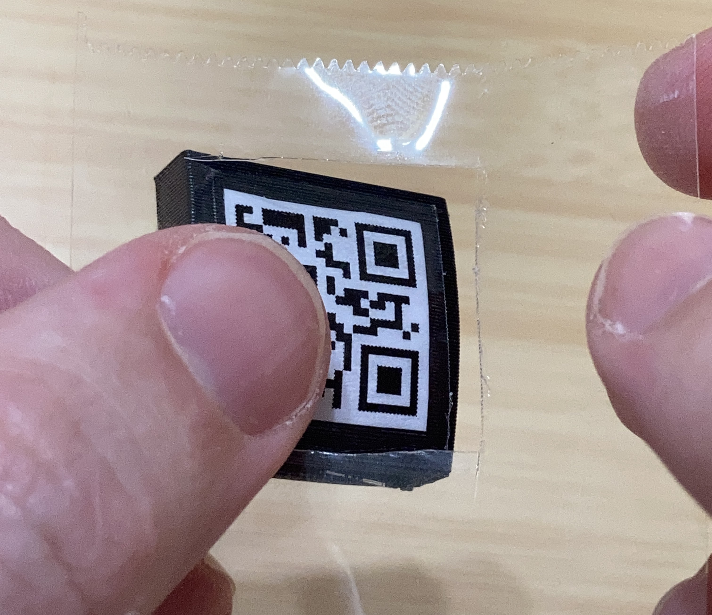
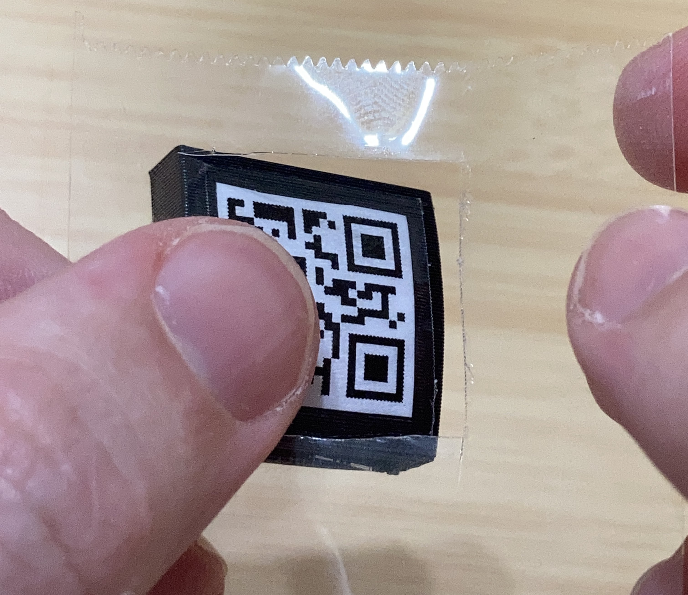

- What you need
- Access to a printer
- QR Code Slip / Clip
- Scisors
- Glue Stick
- Scrap paper / cardboard
- Clear Packing Tape
- Knife
- Generate your QR code using the form above (up to 5 different QR codes may be generated at one time)

- Cut out QR code

- Place QR code face down on scrap of cardboard and coat the back with a gluestick

- Stick QR code on print and let it dry for at least 5 minutes

- Cover QR code with clear packing tape

- Carefully use a sharp knife to score the edges of the tape
- DISCLAIMER: There is a real risk of slipping and cutting yourself trying to score the tape this way. While this method produces a cleaner cut, and makes it less likely to peel, you can also just cut the edges of the tape with scisors.
 

- Peel away the tape

- Run fingernail along edges of tape to make sure there is a good seal